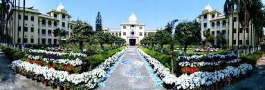

PhD – Cognitive Neuroscience
Centre for Neuroscience, Indian Institute of Science (IISc) Bangalore
Expected 2026
Dissertation: Cognitive Control of Emotional Conflict
Advisor: Dr. Srikanth Padmala
MSc course-phase (Integrated PhD)
Centre for Neuroscience, IISc Bangalore
2020 — GPA 8.6/10

BSc (Hons) Microbiology
Ramakrishna Mission Vidyamandira, University of Calcutta
2018 — Silver Medallist, GPA 9.09/10